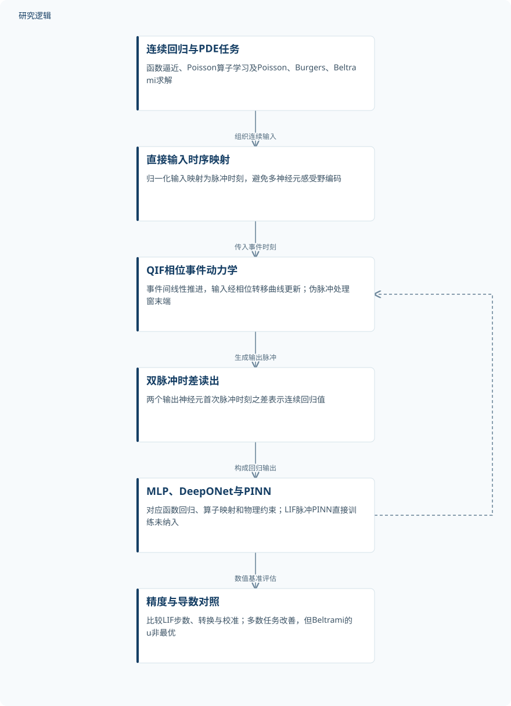
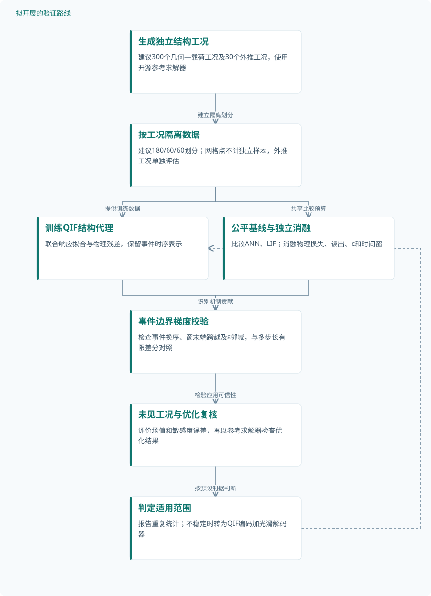

论文精读
从LIF到QIF：面向科学机器学习的可微脉冲神经元
From LIF to QIF: Toward differentiable spiking neurons for scientific machine learning
精读更新 2026-10-03 21:48 · 依据论文全文整理
脉冲网络能否用于科学计算，关键不只是拟合连续数值，还在于输出导数能否可靠进入物理方程。Wan、Karniadakis与Stinis将二次积分发放神经元QIF引入函数回归、算子学习和PDE求解，以脉冲时刻的可微映射缓解LIF预测中的锯齿与梯度困难。本文值得关注的是神经元动力学、输入输出编码与物理约束之间的联系；但精度改善、统计稳定性和硬件效率，仍须分别判断。
文章目录
科学回归需要的不只是连续输出
科学机器学习经常需要从输入函数预测解场，或对预测结果求导以构造PDE残差。LIF的脉冲生成存在离散切换，权重或输入时刻的微小变化可能改变脉冲是否发生，因而需要替代梯度。对PINN而言，解值接近真值却导数失真，仍可能意味着物理约束没有得到保留。
本文不是首次提出可微QIF，而是将既有神经元机制扩展到MLP、DeepONet和PINN回归框架。相关文献《Stable Learning Using Spiking Neural Networks Equipped With Affine Encoders and Decoders》的摘要也讨论参数连续性与稳定训练，但不能据此替本文补充实验结论。本文真正需要检验的是：事件驱动表示能否同时支持准确预测与可信求导。
从无穷电位到可求导的脉冲时刻
实验采用无穷短耦合的振荡QIF，其动力学为τ_m dV/dt=V(V−1)+I(t)，输入脉冲使电位瞬时跳变相应权重。超阈值恒定驱动使神经元自持振荡，电位趋于+∞时发放并重置到−∞。通过相位变换，事件间演化变为dφ/dt=1，输入事件则由光滑相位转移曲线H更新，避免直接处理无穷电位。
单输入输出时刻满足t_sp=t_i+φ_Θ−H_{w_i}(φ_0+t_i)，权重和输入时刻的敏感度可直接求导。多输入通过事件递推与链式法则传播梯度，但推导限定事件顺序固定且无事件重合。作者还以伪脉冲延续时间窗末端的潜在轨迹，并推导普通与伪脉冲交界处的时间及梯度连续性。
输入归一化后被直接映射为发放时刻，输出则取两个神经元首次脉冲时刻之差，以表达零值和负值。DeepONet仍以分支与主干特征内积学习函数间映射，PINN则依靠输出导数构造物理约束。实现会忽略距阈值或重置状态小于ε=10^−6的输入影响，因此理论光滑性不等于数值实现保留了全部边界邻域效应。
原研究：可微脉冲时序进入科学回归


概括原文方法与数值验证；不包含拟议结构应用或硬件收益。
下载 SVG图示关系说明
实线表示相邻阶段的信息流，虚线表示跨阶段联系或反馈。
连续回归与PDE任务 → 直接输入时序映射：组织连续输入；直接输入时序映射 → QIF相位事件动力学：传入事件时刻；QIF相位事件动力学 → 双脉冲时差读出：生成输出脉冲；双脉冲时差读出 → MLP、DeepONet与PINN：构成回归输出；MLP、DeepONet与PINN → 精度与导数对照：数值基准评估；MLP、DeepONet与PINN → QIF相位事件动力学：梯度训练反馈
解析回归、随机源算子与PDE分层验证
所有验证均为数值计算，没有实物试件或硬件实测。抛物线回归使用100个训练点、1000个测试点，网络为4×64，训练10,000个epoch；Ricker与Ripple的样本数量未报告。LIF-32、64、128指仿真时间步，比较包含直接训练、ANN-to-SNN转换及校准，不能将步数或采样点当作独立仿真数量。
Poisson算子学习以RBF核高斯随机场生成源项，报告训练与测试各800个样本，训练1500个epoch。分支结构为[51,64,64,128]，主干为[1,64,64,128]；51是输入维度，不是独立样本量。样本是否对应独立源函数、函数内采样数量和划分规则未报告。
PINN验证包括Poisson、黏性Burgers和Beltrami流；前两者分别使用1000和6579个训练配点。Poisson通过输出乘以x(1−x)硬约束边界，比较直接训练QIF与转换式LIF；直接训练LIF脉冲PINN未纳入可靠比较。重复训练、随机种子、完整验证测试划分及编码和读出的独立消融均未报告。
| 验证任务 | 样本与规模 | 主要结果 |
|---|---|---|
| MLP解析函数回归：抛物线、Ricker与Ripple | 抛物线训练100点、测试1000点；另两项数量未报告。独立仿真、增强数量及重复训练次数未报告。 | QIF三项相对L₂误差为0.609%、1.31%、1.46%；表中最佳直接LIF为1.451%、3.29%、1.86%。 |
| DeepONet一维Poisson解算子学习 | 训练800、测试800个样本；是否对应独立源函数及每函数空间点数未报告，展示曲线数不代表样本总量。 | QIF相对L₂误差2.73%；LIF-32、64、128分别为19.77%、15.72%、8.88%，QIF预测更平滑。 |
| PINN求解一维Poisson与黏性Burgers | Poisson训练配点1000个，Burgers为6579个；配点不是独立问题实例，独立仿真和重复次数未报告。 | QIF误差分别为0.13%、2.42%；最佳校准LIF分别为0.679%、4.28%，转换LIF仍呈锯齿。 |
| PINN求解(2+1)D Beltrami流 | 训练配点、独立流动实例、重复训练和评估点数量未报告；u、v分量及展示快照不是独立样本。 | QIF的u、v误差为4.01%、3.30%；64步校准LIF为3.55%、4.49%，故QIF并非各分量最优。 |
展开数据来源、分组、对照与验证边界
MLP解析函数回归：抛物线、Ricker与Ripple
数据来源。由解析函数生成回归数据；抛物线为x²，Ricker取σ=0.8，Ripple为径向正弦函数。
分组与工况。抛物线为4×64、训练10,000个epoch；QIF时间窗T=2.0。LIF比较32、64、128步及训练策略。
数据划分。抛物线报告训练与测试点数，但采样及重叠情况未报告；其余划分、验证集和数据独立性未报告。
对照与消融。LIF直接训练、ANN-to-SNN转换及校准；部分转换配置为N/A。输入编码和双输出读出独立消融未报告。
评价指标。相对L₂误差、RMSE、R²及表注定义为最大绝对误差的MAE；MAE与RMSE存在定义或聚合疑点。
验证边界。Ripple正文称最佳LIF为2.43%，与表格不一致；重复统计和完整采样设置缺失，不能判断显著性。
DeepONet一维Poisson解算子学习
数据来源。−u_xx=g(x)，x∈[−1,1]，两端零边界；g由核exp[−(x−x′)²/2]的高斯随机场采样。
分组与工况。分支[51,64,64,128]、主干[1,64,64,128]；批大小50，1500个epoch，QIF时间窗T=3.0。
数据划分。报告训练与测试各800个；验证集、随机场生成细节、划分策略和训练测试重叠情况未报告。
对照与消融。直接训练LIF-32、LIF-64、LIF-128；表中校准行为N/A，原因未报告；独立消融未报告。
评价指标。相对L₂误差及跨样本RMSE分布，同时报告MAE与R²；评估网格、方差数值和统计检验未报告。
验证边界。参考解生成方式、样本独立性与重复统计未报告；不能由样本内表现推定分布外算子泛化。
PINN求解一维Poisson与黏性Burgers
数据来源。Poisson解析解2sin(πx)，零边界；Burgers取ν=0.01/π，初值−sin(πx)，两端零边界。
分组与工况。Poisson为2×64、500个epoch；Burgers为6×64、15,000个epoch。QIF均取T=2.0。
数据划分。报告训练配点数量；采样构成、验证测试数量、评估网格及其与训练配点是否重叠未报告。
对照与消融。直接训练QIF对比32、64、128步LIF转换及校准；直接训练LIF脉冲PINN未纳入可靠比较。
评价指标。相对L₂误差及逐点误差；Poisson还比较u_xx曲线。导数误差和PDE残差定量指标未报告。
验证边界。缺少重复统计与定量残差；Burgers参考解生成流程未报告，不能将平滑预测直接等同于约束严格满足。
PINN求解(2+1)D Beltrami流
数据来源。不可压缩Navier–Stokes基准，x,y∈[−1,1]、t∈[0,1]；原文部分v边界与初值不一致。
分组与工况。网络6×64，QIF时间窗T=2.0；LIF使用32、64、128步，各含未校准和校准转换。
数据划分。训练、验证、测试数量与空间时间划分未报告；图示t≈0.692快照不能代替完整测试设置。
对照与消融。不同步数LIF转换及校准，与QIF比较；完整控制变量说明、独立ANN结果及其他消融未报告。
评价指标。u、v分别报告相对L₂、RMSE、MAE和R²；压力误差、不可压缩残差与统计不确定性未报告。
验证边界。边界设定需核实；MAE命名或聚合存在疑点，且缺少物理残差和重复统计，限制可复现性判断。
平滑性优势明确，全面最优仍不成立
表中抛物线、Ricker和Ripple的QIF相对L₂误差分别为0.609%、1.31%和1.46%，最佳直接训练LIF分别为1.451%、3.29%和1.86%。Ripple正文所述“最佳LIF为2.43%”与汇总表不一致，应保留这一差异。Poisson算子学习中QIF为2.73%，最佳LIF为8.88%，支持该设置下的精度优势，但跨样本RMSE离散程度不能替代重复训练统计。
Poisson与Burgers的QIF相对L₂误差分别为0.13%和2.42%，前者还展示了更准确的二阶导数。QIF并非全面最优：Beltrami流u分量中，64步校准LIF为3.55%，低于QIF的4.01%；v分量则是QIF更优。原文该流动的部分边界与初值不一致，且表注“最大绝对误差”多处小于RMSE，指标与设定均需核实。
因此，现有证据更适合支持“QIF有助于连续回归及导数质量”，而非普遍精度或效率优势。尚缺定量物理残差、重复统计、未见工况与硬件能耗验证，研究建议应围绕这些缺口展开。以下路线是拟议实验，不属于论文已完成成果。
从这篇论文走向下一项研究
以下为结合研究方向提出的候选方案，实验设计与预期目标有待验证。
面向结构响应代理的事件梯度可信性验证
问题与短板。本文展示了解值与导数改善，却没有独立消融区分神经元、输入编码和双输出读出的作用。结构优化依赖响应敏感度，首先应检验QIF梯度是否可信，而不只比较场值误差。
改进机制。建议将QIF用于参数化线弹性结构响应代理，以事件梯度和物理残差共同训练。针对事件换序、时间窗跨越及ε邻域设置专门诊断，用有限差分和参考解敏感度交叉检查。
候选创新。候选创新是把事件边界诊断、导数校验与结构优化目标组合为可审计流程，而非再次提出可微神经元。既有仿射编码脉冲网络研究可作为连续性参照，其摘要不能证明该组合有效。
数据与实验设计。建议设计300个独立几何—载荷仿真工况，按180/60/60划分训练、验证和测试，再另设30个外推工况。资料可用开源求解器生成；网格点仅作工况内采样，不计独立样本。
对照与消融。比较光滑ANN、LIF直接训练及转换校准、QIF模型，统一参数量与训练预算。分别移除物理损失、改用单输出读出并改变ε与时间窗，使用至少5个随机种子报告离散程度。
成功判据。成功判据应预先约定：未见工况的场值误差和敏感度误差同时优于公平基线，且优化结果经参考求解器复核。改善幅度报告置信区间，不以曲线更平滑作为唯一证据。
风险与替代方案。事件换序可能造成局部梯度异常，有限差分也受步长影响，应采用多步长检查。若纯QIF高阶导数不稳定，可改为QIF特征编码加光滑解码器，并明确其混合网络属性。
检验QIF代理在疲劳可靠性尾部预测中的价值
问题与短板。现有基准主要报告平均场误差，尚未检验小失效概率与参数外推。疲劳可靠性关注极限状态附近的误差，整体L₂较小并不能保证寿命尾部或失效概率准确。
改进机制。建议以QIF代理预测循环载荷下的损伤或裂纹增长响应，在极限状态附近主动补充参考计算。训练约束区分响应拟合、适用域内的物理关系和概率估计，避免将平滑性当作可靠性保证。
候选创新。候选创新是结合事件时序回归、极限状态加权采样与尾部误差审计。它是待验证的新组合，不宣称可靠性代理或主动学习本身新颖，也不假定论文已验证疲劳问题。
数据与实验设计。建议设计400个独立材料—载荷计算工况，按240/80/80划分，再追加50个极限状态附近工况。参数需来自可公开引用的试验资料或另行采集；合成载荷不能算新增材料试件。
对照与消融。比较光滑ANN、Gaussian process代理、LIF与QIF，并统一参考计算预算。消融极限状态加权、主动补点及物理约束，按载荷族分组留出，避免相邻轨迹泄漏到测试集。
成功判据。以留出工况寿命误差、极限状态误分类率和失效概率偏差共同评价，并报告区间估计。只有尾部指标改善且未牺牲总体预测，才支持用于可靠性计算。
风险与替代方案。疲劳规律可能只在特定材料和载荷范围成立，需分开报告参数不确定性与模型误差。若失效样本不足或QIF没有优势，应保留参考求解器及成熟代理，不强行追求脉冲化。
研究建议：结构代理的事件梯度审计


对应第一条路线；样本数量、实验分组与成功判据均为建议设计，尚无实测结果。
下载 SVG图示关系说明
实线表示相邻阶段的信息流，虚线表示跨阶段联系或反馈。
生成独立结构工况 → 按工况隔离数据：建立隔离划分；按工况隔离数据 → 训练QIF结构代理：提供训练数据；按工况隔离数据 → 公平基线与独立消融：共享比较预算；训练QIF结构代理 → 事件边界梯度校验：检查精确梯度；公平基线与独立消融 → 事件边界梯度校验：识别机制贡献；事件边界梯度校验 → 未见工况与优化复核：检验应用可信性；未见工况与优化复核 → 判定适用范围：按预设判据判断；判定适用范围 → 训练QIF结构代理：必要时调整架构